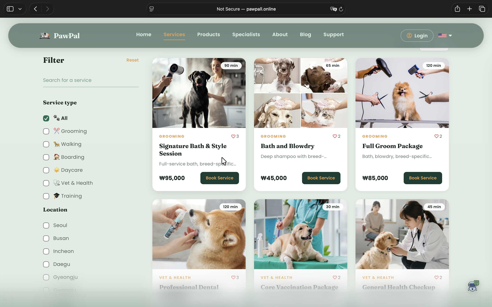
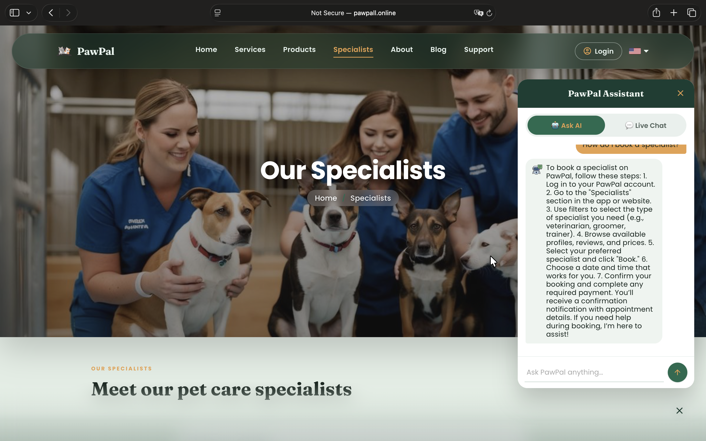
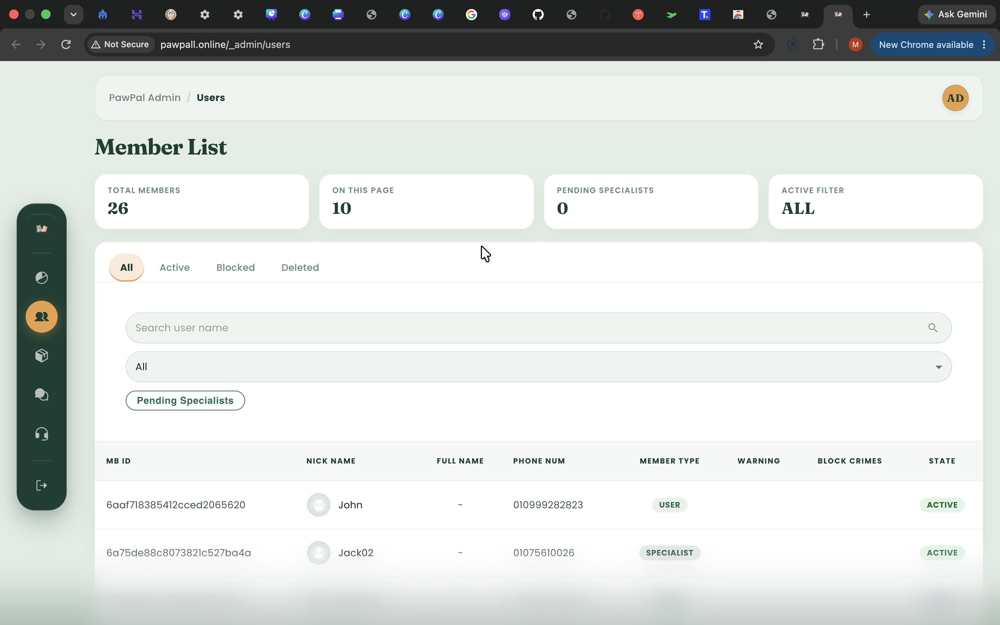

01
Frontend
- React
- Next.js
- TypeScript
- JavaScript
- Redux Toolkit
- Material UI
- Styled Components
- SCSS
- EJS
- jQuery
- Bootstrap
- Apollo Client
01Portfolio / 2026
Hello, I’m Max.
Full-Stack · DevOps · Agentic Engineer
Building production-ready products across web, infrastructure, and AI.
02About

From Uzbekistan to South Korea — building a long-term career in software engineering, infrastructure, and AI.
I came to South Korea to continue my education and build a long-term career in technology. My interest in problem-solving began through mathematics and regional competitions, shaping the analytical and disciplined way I approach technical challenges.
While completing my M.S. in AI Business Engineering, I moved deeper into full-stack products across frontend, backend, databases, deployment, and AI-integrated features.
03Skills
01
02
03
04
04Selected work
01 / Flagship
Pet Care Marketplace

A full-stack marketplace connecting pet owners with specialists, services, products, bookings, community features, and AI-assisted support.
Next.js · NestJS · GraphQL · MongoDB · Docker
Products and services · Booking workflow · User, specialist and admin roles · Community and messaging
Next.js + Apollo → NestJS + GraphQL → 14 MongoDB collections, deployed through nginx and Docker Compose.
Minimal JWT identity, live member validation, account-state enforcement, and OpenAI-powered contextual support.
React · TypeScript · Apollo Client · Mongoose · MongoDB Atlas · Ubuntu · Hostinger VPS



02 / Secondary
Outdoor E-Commerce Platform

A full-stack commerce platform for product discovery, secure checkout, inventory integrity, admin operations, and production deployment.
React · TypeScript · Express.js · MongoDB · PM2


03 / Compact
E-Learning Platform
A role-based platform for course discovery, purchase, access, and structured learning.
JavaScript · EJS · jQuery · Axios · Bootstrap

Side projects
05Strength
I like understanding the whole product—from interface and application logic to deployment—so I can take responsibility for dependable delivery.
International study and project work strengthened my ability to learn quickly, work across disciplines, and stay practical when requirements change.
I keep expanding beyond application development into infrastructure and AI-assisted workflows, turning new knowledge into working software.
06Career
Innovatech Development
TechNest Digital
07Education
2024–2026
Seoul Media Institute of Technology
South Korea08Contact
Available for full-time software engineering opportunities in South Korea.